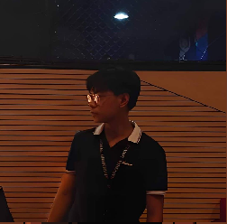

|

|
Lead Developer/FounderMeet LiybieHi, I'm Liybie R. Paragatos, a dedicated student with a passion for exploring the digital world. I’m currently a college student at National University Manila, College of Computing and Information Technologies, pursuing a Bachelor of Science in Information Technology with a focus on Multimedia and Web Application (BSIT-MWA). I’m the lead developer and founder of "TECHCORE" a website aimed at providing information about computer components. Here, you'll find a collection of resources about computer components. Motto "Optional lang Matulog" |